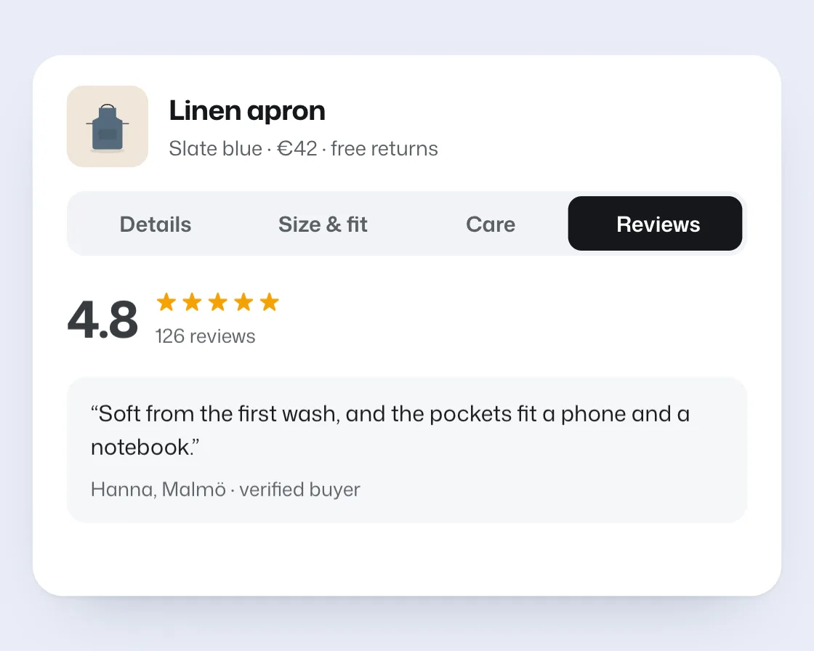

Tab swap
Tab swap is a DOM effect: a clipped copy of the tabs; the leading edge moves first. One plain JavaScript file with no dependencies; add it with npx motion-library add tab-swap.

Open it live, tune it and copy the code
What is Tab swap?
A dark pill slides to the picked product tab and the content below cross-fades.
How does Tab swap work?
The pill is a dark copy of the tab row clipped to the active tab, so animating the clip moves background and label colour together; the leading edge leads.
How do I add Tab swap to my website?
- In your project folder, run
npx motion-library add tab-swap. It writesanimations/tab-swap.js. Needs Node 18 or newer. - Import it and call it with a container element that has a size:
import fx from './animations/tab-swap.js'; const stop = fx(document.querySelector('#hero')); - Call
stop()to clean up, for example when a component unmounts.
Every setting below is also a flag, so you can install it already tuned: npx motion-library add tab-swap --duration 800.
What settings can I tweak?
| Setting | Flag | Default | Range | Step |
|---|---|---|---|---|
| Duration (ms) | --duration | 300 | 150 to 800 | 10 |
| Trailing lag (ms) | --lag | 70 | 0 to 200 | 5 |
Specifications
- Renderer
- DOM (CSS and the Web Animations API)
- Category
- Basics
- Dependencies
- None
- File size
- 9.0 KB, unminified
- Interactive
- No: it plays on its own
- Reduced motion
- Respects prefers-reduced-motion
- Licence
- MIT-0: use it anywhere, no credit needed
Source code
// Tab swap: on a product page, the dark tab pill slides to the tab you pick, its leading edge first and its trailing edge a beat later, while the content below cross-fades.
// The pill is a clipped copy of the whole tab row, so its colour and the white label inside change in perfect sync. Letting the two edges move at different times stretches the pill toward its target, which reads as quick and soft at once.
const PARAMS = { duration: 300, lag: 70 };
export default function (stage) {
const reduce = matchMedia('(prefers-reduced-motion: reduce)').matches;
const AW = 440, AH = 318, TW = 400, PAD = 3;
const tabs = ['Details', 'Size & fit', 'Care', 'Reviews'];
const check = '<svg viewBox="0 0 16 16" width="14" height="14"><path d="M3.5 8.5l3 3 6-7" fill="none" stroke="#3b5bdb" stroke-width="1.8" stroke-linecap="round" stroke-linejoin="round"/></svg>';
const panes = [
`<p>Washed linen in a relaxed cut, with a long neck strap and two deep pockets. Soft from day one.</p>
<ul><li>${check}100% washed European flax</li><li>${check}Two front pockets, 18 × 16 cm</li><li>${check}Adjustable cotton neck strap</li></ul>`,
`<div class="ts-specs"><div><small>Length</small>86 cm</div><div><small>Width</small>70 cm</div><div><small>Strap</small>60–74 cm</div><div><small>Weight</small>210 g</div></div>
<p class="ts-note">One size fits most. Our model is 178 cm and wears it at the longest strap setting.</p>`,
`<ul class="ts-care"><li><i>40°</i>Machine wash at 40 °C with similar colours</li><li><i>◯</i>Tumble dry low, or line dry in the shade</li><li><i>≈</i>Iron while slightly damp for a crisp finish</li></ul>`,
`<div class="ts-score"><b>4.8</b><span><em>★★★★★</em>126 reviews</span></div>
<blockquote>“Soft from the first wash, and the pockets fit a phone and a notebook.”<cite>Hanna, Malmö · verified buyer</cite></blockquote>`,
];
const root = document.createElement('div');
root.className = 'ts-root';
root.innerHTML = `<style>
.ts-root { position: absolute; inset: 0; background: #e9edf7; overflow: hidden; color: #15171a; font-family: "Mona Sans", system-ui, -apple-system, sans-serif; }
.ts-board { position: absolute; left: 50%; top: 50%; width: ${AW}px; height: ${AH}px; box-sizing: border-box; padding: 18px 20px; background: #fff; border-radius: 18px; box-shadow: 0 1px 2px rgba(20,30,60,.06), 0 18px 40px -24px rgba(20,30,60,.35); }
.ts-prod { display: flex; align-items: center; gap: 12px; margin-bottom: 14px; }
.ts-thumb { width: 48px; height: 48px; border-radius: 10px; background: #efe6da; display: grid; place-items: center; }
.ts-thumb svg { width: 42px; height: 42px; }
.ts-prod h3 { margin: 0; font-size: 16px; font-weight: 700; letter-spacing: -0.015em; font-stretch: 106%; }
.ts-prod p { margin: 3px 0 0; font-size: 12px; color: #5b6066; }
.ts-tabs { position: relative; width: ${TW}px; height: 38px; border-radius: 11px; background: #f1f3f6; }
.ts-row { position: absolute; inset: 0; display: grid; grid-template-columns: repeat(4, 1fr); padding: 0 ${PAD}px; }
.ts-row span { display: grid; place-items: center; font-size: 12.5px; font-weight: 620; color: #5b6066; }
.ts-row.ts-on { background: #15171a; border-radius: 11px; will-change: clip-path; }
.ts-row.ts-on span { color: #fff; }
.ts-body { position: relative; height: 150px; margin-top: 14px; }
.ts-pane { position: absolute; inset: 0; opacity: 0; font-size: 12.5px; line-height: 1.5; color: #33373c; }
.ts-pane p { margin: 0 0 10px; }
.ts-pane ul { list-style: none; margin: 0; padding: 0; display: grid; gap: 7px; }
.ts-pane li { display: flex; align-items: center; gap: 8px; }
.ts-specs { display: grid; grid-template-columns: repeat(4, 1fr); gap: 8px; margin-bottom: 12px; }
.ts-specs div { padding: 10px; border-radius: 10px; background: #f6f7f9; font-size: 14px; font-weight: 650; }
.ts-specs small { display: block; font-size: 10.5px; font-weight: 600; color: #5b6066; margin-bottom: 3px; }
.ts-note { color: #5b6066; }
.ts-care li { gap: 12px; }
.ts-care i { width: 32px; height: 32px; border-radius: 9px; background: #f6f7f9; display: grid; place-items: center; font-style: normal; font-size: 11px; font-weight: 700; color: #3b5bdb; }
.ts-score { display: flex; align-items: center; gap: 10px; margin-bottom: 12px; }
.ts-score b { font-size: 30px; font-weight: 720; letter-spacing: -0.02em; }
.ts-score span { display: grid; font-size: 11.5px; color: #5b6066; }
.ts-score em { font-style: normal; color: #f59f00; letter-spacing: 2px; font-size: 13px; }
.ts-pane blockquote { margin: 0; padding: 12px 14px; border-radius: 12px; background: #f6f7f9; font-size: 13px; color: #15171a; }
.ts-pane cite { display: block; margin-top: 6px; font-style: normal; font-size: 11.5px; color: #5b6066; }
</style>
<div class="ts-board">
<div class="ts-prod"><span class="ts-thumb"><svg viewBox="0 0 100 100"><ellipse cx="50" cy="84" rx="24" ry="3.6" fill="#000" opacity=".09"/><path d="M41 26c0-9 18-9 18 0" fill="none" stroke="#33373c" stroke-width="1.6"/><path d="M38 24h24v13l9 5v36a4 4 0 0 1-4 4H33a4 4 0 0 1-4-4V42l9-5z" fill="#556b7d"/><rect x="37" y="54" width="26" height="14" rx="2" fill="#000" opacity=".1"/><path d="M29 46h-9M71 46h9" stroke="#33373c" stroke-width="1.4"/></svg></span>
<div><h3>Linen apron</h3><p>Slate blue · €42 · free returns</p></div></div>
<div class="ts-tabs"><div class="ts-row">${tabs.map(t => `<span>${t}</span>`).join('')}</div><div class="ts-row ts-on">${tabs.map(t => `<span>${t}</span>`).join('')}</div></div>
<div class="ts-body">${panes.map(p => `<div class="ts-pane">${p}</div>`).join('')}</div>
</div>`;
stage.append(root);
const board = root.querySelector('.ts-board'), on = root.querySelector('.ts-on');
const paneEls = [...root.querySelectorAll('.ts-pane')], tabEls = [...root.querySelectorAll('.ts-row:not(.ts-on) span')];
const fit = () => { const s = Math.min(stage.clientWidth / AW, stage.clientHeight / AH) * 0.92; board.style.transform = `translate(-50%, -50%) scale(${Math.min(s, 1.6)})`; };
const ro = new ResizeObserver(fit); ro.observe(stage); fit();
// Edge positions of each tab inside the row (px from the left).
const w = (TW - PAD * 2) / tabs.length;
const L = i => PAD + i * w, R = i => PAD + (i + 1) * w;
let left = L(0), right = R(0);
const clip = () => { on.style.clipPath = `inset(${PAD}px ${(TW - right).toFixed(2)}px ${PAD}px ${left.toFixed(2)}px round 8px)`; };
clip();
paneEls[0].style.opacity = 1;
const ease = bezier(0.77, 0, 0.175, 1), easeOut = 'cubic-bezier(0.23, 1, 0.32, 1)';
let raf = 0, cur = 0;
function go(to) {
const from = cur, l0 = left, r0 = right, l1 = L(to), r1 = R(to), forward = to > from, t0 = performance.now();
cur = to;
// The edge on the side you're heading leads; the other follows `lag` ms later.
const tick = now => {
const t = reduce ? 1e9 : now - t0; // reduced motion: the pill jumps straight to its tab
const lead = ease(Math.min(1, Math.max(0, t / PARAMS.duration))), trail = ease(Math.min(1, Math.max(0, (t - PARAMS.lag) / PARAMS.duration)));
left = l0 + (l1 - l0) * (forward ? trail : lead);
right = r0 + (r1 - r0) * (forward ? lead : trail);
clip();
if (t < PARAMS.duration + PARAMS.lag) raf = requestAnimationFrame(tick);
};
cancelAnimationFrame(raf); raf = requestAnimationFrame(tick);
tabEls[to].animate([{ transform: 'scale(1)' }, { transform: 'scale(0.96)' }, { transform: 'scale(1)' }], { duration: reduce ? 0 : 200, easing: easeOut });
// The content follows the pill: it swaps once the pill is visibly on its way.
const d = Math.round(PARAMS.duration * 0.3);
paneEls[from].animate([{ opacity: 1, transform: 'none' }, { opacity: 0, transform: reduce ? 'none' : 'translateY(-4px)' }], { duration: 120, delay: d, easing: easeOut, fill: 'forwards' });
paneEls[to].animate([{ opacity: 0, transform: reduce ? 'none' : 'translateY(6px)' }, { opacity: 1, transform: 'none' }], { duration: 240, delay: d + 90, easing: easeOut, fill: 'both' });
}
const timers = new Set();
const later = (fn, ms) => { const id = setTimeout(() => { timers.delete(id); fn(); }, ms); timers.add(id); };
const order = [1, 3, 2, 0];
let n = 0;
const step = () => { go(order[n++ % order.length]); later(step, 2000); };
later(step, 900);
return () => { timers.forEach(clearTimeout); cancelAnimationFrame(raf); ro.disconnect(); root.getAnimations({ subtree: true }).forEach(a => a.cancel()); root.remove(); };
}
// cubic-bezier(x1, y1, x2, y2) as a function of progress, solved with Newton's method.
function bezier(x1, y1, x2, y2) {
const cx = 3 * x1, bx = 3 * (x2 - x1) - cx, ax = 1 - cx - bx;
const cy = 3 * y1, by = 3 * (y2 - y1) - cy, ay = 1 - cy - by;
const X = t => ((ax * t + bx) * t + cx) * t, Y = t => ((ay * t + by) * t + cy) * t, dX = t => (3 * ax * t + 2 * bx) * t + cx;
return x => { let t = x; for (let i = 0; i < 8; i++) { const d = dX(t); if (Math.abs(d) < 1e-6) break; t -= (X(t) - x) / d; } return Y(Math.min(1, Math.max(0, t))); };
}